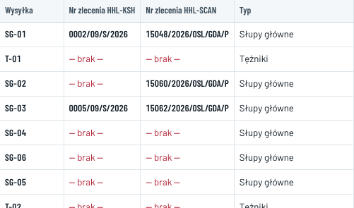
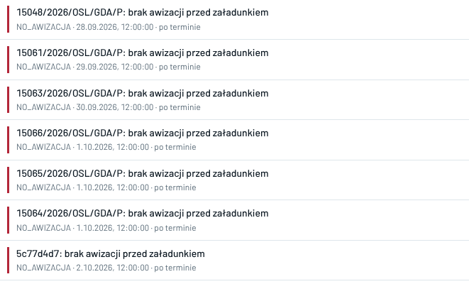
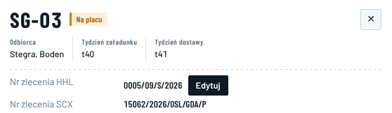

E41 · Nazwa transportu w każdym miejscu, zależnie od firmy · komputer i telefon
„Dziś” — zrzuty 08.10, 00:0x i dane z bazy · „po zmianie” — kody i numery zleceń z bazy, treści wiadomości przykładowe · 08.10, 12:14: kropka „·” zamiast „●”, SCX widzi numer HHL do odczytu
Dziś
Harmonogramnumery widzi każda firma

Kod w kolumnie „Wysyłka”, numery w osobnych kolumnach „Nr zlecenia HHL-KSH” i „Nr zlecenia HHL-SCAN”. Te same kolumny widzi KSH i SCX.
Ryzyka › Centrum decyzji3 różne nazwy

„15048/2026/OSL/GDA/P” to numer z pliku KSH (SG-01). „5c77d4d7” to początek numeru wewnętrznego (SG-07). „15061/2026/OSL/GDA/P” = T-01.
W bazie 08.10
Kod transportu94 / 94
Nr zlecenia HHL3 / 94
Nr zlecenia SCX3 / 94
Nr z pliku KSH10 / 94
Kody: SG 30, BS 27, KR 14, PL 9, T 6, SS 5, TS 3. Każdy kod jest inny.
Panel transportuten sam u KSH i SCX

Nagłówek: sam kod. W Przeglądzie oba numery, widoczne dla każdej firmy. Edytować może tylko właściciel numeru.
Teksty z bazy dziś: pięć sposobów nazwania transportu
| Gdzie | Co jest w treści | Przykład z bazy |
|---|
| Brak numeru zlecenia, terminy zasobów | kod | „SG-01: brak numeru zlecenia HHL” |
| Brak awizacji i dokumentów, daty KSH, przypomnienia | numer z pliku KSH, a bez niego 8 znaków numeru wewnętrznego | „15048/2026/OSL/GDA/P: brak awizacji…”, „5c77d4d7: brak awizacji…” |
| Automatyczna zmiana statusu | pełny numer wewnętrzny | „Transport 963e19dd-fe83-4690-9306-5c7fc4b95468 bez numeru zlecenia przewoźnika…” |
| Czat (powiadomienie) | numer HHL, a bez niego numer z pliku KSH — w danych powiadomienia także dla KSH i SCX | „0005/09/S/2026” |
| SMS, e-mail o sprawie | numer z pliku KSH, a bez niego „—” albo 8 znaków | e-mail o sprawie: lista numerów z pliku KSH |
| Powiadomienie push | bez transportu | „Watch Tower — RISK_OPEN” |
Dzwonek dokleja z przodu kod i usuwa 8 znaków. Centrum decyzji, e-maile i SMS pokazują tekst z bazy bez zmian. Żaden tekst nie zależy od firmy odbiorcy.
Po zmianie — jedna zasada: kod · numer zlecenia własnej firmy
Ten sam transport w każdej firmieSG-03 ma oba numery, SG-07 nie ma żadnegoPrzykład: treści wiadomości
| Miejsce | HHL · Administrator i Operacje | SCX · Dyspozytor i Użytkownik | KSH · Użytkownik |
|---|
| Harmonogram, Mapa, Kokpit, Dokumenty, Faktury, Finanse, wyszukiwanie |
SG-03·0005/09/S/2026 |
SG-03·15062/2026/OSL/GDA/P |
SG-03 |
| Transport bez numeru |
SG-07 brak nr HHL tylko w Harmonogramie i panelu |
SG-07 brak nr SCX tylko w Harmonogramie i panelu |
SG-07 |
| Do zrobienia, Ryzyka, dzwonek |
SG-07 — brak awizacji przed załadunkiem dziś: „5c77d4d7: brak awizacji przed załadunkiem” |
SG-07 — brak awizacji przed załadunkiem |
KSH nie ma listy Do zrobienia (19:11); w dzwonku: „SG-03 — Nowa wiadomość w czacie” |
| E-mail (temat) |
SG-03 · 0005/09/S/2026 — Nowa wiadomość w czacie |
SG-03 · 15062/2026/OSL/GDA/P — Nowa wiadomość w czacie |
SG-03 — Nowa wiadomość w czacie |
| Powiadomienie push |
SG-03 · 0005/09/S/2026 — Nowa wiadomość w czacie |
SG-03 · 15062/2026/OSL/GDA/P — … |
SG-03 — … |
| SMS do Śremu i Boden (E42) | Zawsze sam kod: „SG-03 przyjazd ok. 12:45 Boden plac”. Znak „·” nie trafia do SMS (jest spoza alfabetu GSM, więc zmniejszyłby SMS do 70 znaków). |
| PDF, ZIP, załączniki, eksport | Nazwy plików zawsze kodem: „SG-03_CMR.pdf”, „WATCH_TOWER_SG-03.pdf”, folder w ZIP „SG-03”. W środku PDF i w kolumnie „Transport” w eksporcie — nazwa jak na ekranie danej firmy. |
| Adres strony | „…/#/transport/SG-03” dla wszystkich. Kod jest unikalny (94 z 94), a link z e-maila zawsze otwiera właściwy transport. |
Harmonogram · HHLkolumna „Transport” zamiast „Wysyłka” i dwóch kolumn numerówPrzykład
| Transport | Typ | Załadunek | Dostawa | Status |
|---|
| SG-01·0002/09/S/2026 | Słupy główne | 29.09.2026 | 05.10.2026 | Rozładowany |
| T-01 brak nr HHL | Tężniki | 30.09.2026 | 05.10.2026 | Planowany |
| SG-02 brak nr HHL | Słupy główne | 30.09.2026 | 05.10.2026 | Planowany |
| SG-03·0005/09/S/2026 | Słupy główne | 01.10.2026 | 07.10.2026 | Na placu |
| SG-04 brak nr HHL | Słupy główne | 01.10.2026 | 07.10.2026 | Planowany |
SCX widzi w tej kolumnie swój numer: „SG-01 · 15048/2026/OSL/GDA/P”, „SG-02 · 15060/2026/OSL/GDA/P”, „T-01 brak nr SCX”. KSH widzi tylko kod. Wyszukiwanie: HHL po kodzie i obu numerach, SCX po kodzie i swoim numerze, KSH po kodzie.
HHL · nagłówek panelu
SG-03 ·0005/09/S/2026Na placu
Nr zlecenia HHL0005/09/S/2026 Edytuj
Nr zlecenia SCX15062/2026/OSL/GDA/P
SCX · nagłówek panelu
SG-03 ·15062/2026/OSL/GDA/PNa placu
Nr zlecenia SCX15062/2026/OSL/GDA/P Edytuj
Nr zlecenia HHL tylko odczyt (decyzja 2)0005/09/S/2026
KSH · nagłówek panelu
SG-03 Na placu
Bez pól z numerami zleceń.
HarmonogramHHL
SG-01·0002/09/S/2026
Słupy główne · 29.09 → 05.10 · Rozładowany
T-01 brak nr HHL
Tężniki · 30.09 → 05.10 · Planowany
SG-03·0005/09/S/2026
Słupy główne · 01.10 → 07.10 · Na placu
KokpitHarmonogramRyzykaDokumentyWięcej
HarmonogramSCX
SG-01·15048/2026/OSL/GDA/P
Słupy główne · 29.09 → 05.10 · Rozładowany
T-01 brak nr SCX
Tężniki · 30.09 → 05.10 · Planowany
SG-03·15062/2026/OSL/GDA/P
Słupy główne · 01.10 → 07.10 · Na placu
KokpitHarmonogramRyzykaDokumentyWięcej
HarmonogramKSH
SG-01
Słupy główne · 29.09 → 05.10 · Rozładowany
T-01
Tężniki · 30.09 → 05.10 · Planowany
SG-03
Słupy główne · 01.10 → 07.10 · Na placu
KokpitHarmonogramRyzykaDokumentyWięcej